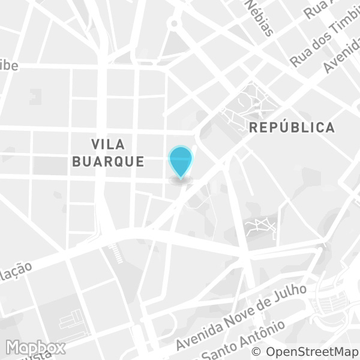

Por que mapear dados?
Tudo acontece em algum lugar. E, cada vez mais, dados contém localizações; por exemplo: acidentes de trânsito, matrículas escolares, uso de bicicletas compartilhadas e lançamentos imobiliários.
Mapear significa visualizar dados espacialmente e permite analisar relações entre fenômenos e lugares. Isso ajuda a entender processos e guiar decisões, seja em urbanismo, políticas públicas, negócios, ou ativismo.
GIS (Geographic Information Systems, ou Sistemas de Informação Geográfica) são ferramentas digitais que permitem realizar mapeamento e análises a partir de dados. O curso irá introduzir alunos a GIS utilizando o software QGIS.
O que você vai aprender no curso?
- Visualizar e mapear dados abertos,
- Criar mapas a partir de categorias e gradações,
- Exportar imagens e PDF de mapas completos com escala e legenda,
- Trabalhar com camadas,
- Filtrar e editar dados,
- Realizar análises espaciais (ex: quantas escolas existem em cada bairro),
- Importar dados a partir de várias fontes e formatos (Shapefile, CSV),
- Adicionar camadas de mapas online (OpenStreetMap, Google Maps)
Como funciona o curso?
Começamos com uma exposição rápida dos conceitos básicos de dados, mapeamento e GIS. A partir daí, realizamos uma sequência de exercícios práticos que aprofundam e introduzem novos conceitos. Enquanto um dos professores demonstra o exercício, o outro acompanha e ajuda os alunos. Ao fim da aula os alunos terão como produtos mapas e análises que refletem todo conteúdo aprendido.
Para quem é o curso?
O curso se destina a todos que se interessam por mapeamento e visualização de dados, sobretudo para questões urbanas. As ferramentas e conceitos abordados no curso são relevantes para arquitetos, urbanistas, designers, jornalistas, gestores públicos, ativistas, programadores e engenheiros.
Que software vamos utilizar?
QGIS (Quantum GIS), um software livre e gratuito. O QGIS suporta formatos vetoriais, raster, banco de dados, entre outros. Com ele você poderá visualizar, editar, analisar, exportar e gerenciar dados. Além disso, o projeto QGIS possui um ecossistema vibrante de contribuidores que melhoram o software continuamente e desenvolvem plugins e novas ferramentas.
O que você precisa trazer?
Somente seu computador com o QGIS instalado.
Quando e onde?
Data:
03 e 10 de dezembro 9-18h
(carga horária total: 8 horas)
Local:
Estúdio Registro
Rua Major Sertório, 92 - 3º andar
São Paulo, SP

Valor:
R$160,00
Quem são os professores?
Bernardo Loureiro é mestre em Desenho Urbano pela Parsons School of Design, com foco em uso de dados e tecnologias para urbanismo. Desenvolve análises, visualizações e aplicativos voltados para problemas urbanos.
Anelise Bertolini é arquiteta e urbanista pela USP, com experiência em projetos de transporte, mobilidade e desenho urbano. Implementa GIS para identificação de condições existentes e propostas em projetos urbanos.
Contato:
Inscrições:
Programa detalhado do curso:
Introdução:
- Para que servem mapas?
- Histórico
- Origens do GIS/SIG
- Tipos de mapas e visualizações
- O que é GIS/SIG?
- Dados e localização
- Camadas
- Tipos de geometria
- Análises espaciais
- Definindo localização
- Coordenadas
- Projeções
- Ferramentas livres e dados abertos
Mapeamento com QGIS:
- Introdução à interface
- Formatos de arquivos
- Tabela de atributos
- Editando estilos
- Simples, categorizado, graduado
- Rótulos
- Cores
- Sobrepondo camadas
- Encoding/codificação
- Exportando mapas com o compositor (imagem, PDF, SVG)
- Legendas
- Escalas
- Filtros e “queries”
- Pontos em polígonos e junções espaciais
- Calculadora de campo
- “Junções” por coluna
- Exportar tabela (CSV)
- Geocoding (de endereços para localizações)
- Importar Camadas CSV
- Plugins
- Mapas base (ruas, satélite, etc.)
- Baixando dados abertos direto da fonte
- Erros comuns
- Recursos adicionais
- Tutoriais
- Materiais de referência
- Tópicos adicionais
- Buffer e outras funções de geoprocessamento
- Criando e editando shapefiles
Dúvidas?
Mande um email para contato@medidasp.com